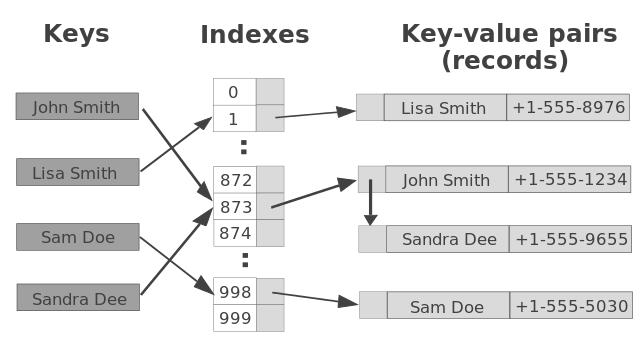
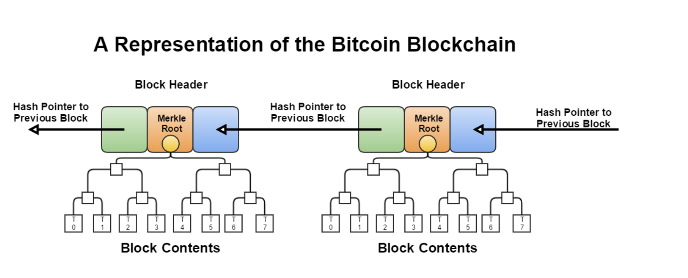

Cryptographic Premitives
A hash function is a mathematical function that maps input data of arbitrary size to a fixed-size output called a hash value:
\(H(x) :\{ 0,1 \}^{*} \rightarrow \{ 0,1 \}^{l}\)
In recent years, cryptographic hash functions are widely used in the area of blockchain technology. Then we will introduce the definition and properties of cryptographic hash functions, as well as their usages.
Hash Functions
A hash function is a function that takes input data of arbitrary size and outputs a fixed-size hash value. It's a one-way function that generates the same output for the same input every time.
Hash functions are commonly used in computer science for data indexing and searching, particularly in hash tables. A hash table is a key-value store where the value can be of any data type. The hash function maps each key to a unique index in an array, allowing for fast access to the value associated with a particular key.

A good hash function should have following properties:
- Arbitrary sized inputs
- Fixed size deterministic output
- Efficiently computable
- Minimize collisions
SHA-256 is an example of a hash function that outputs a 256-bit hash value. While SHA-256 does not have provable security, it is used in the random oracle model, which assumes an arbitrary random k-bit string for any input with a uniform distribution.
Cryptographic Hash Functions
Cryptographic hash functions have additional properties that easy to compute but difficult to invert. The only way to find the input is through brute force search.
The Merkle-Damgard construction is a widely used technique to construct a cryptographic hash function. The construction uses a compression function recursively to create a hash function that can take input data of any size.
Cryptographic hash functions have various applications, including digital commitment, hash pointers, and hash puzzles：
- A commitment is a sealed envelope that contains a message that cannot be changed once committed.
- A hash pointer is a pointer to the value stored in the hash table.
- Hash puzzles are used to find inputs that produce a hash value less than a certain threshold. The input to the hash puzzle is called a nonce, and it is hard to compute but easy to verify.
Blockchain Technology
A blockchain is a linked list data structure that uses hash pointers to connect blocks of data. A block in a blockchain consists of a header and data. The header contains the hash value of the previous block, a timestamp, and other metadata. The hash value of the previous block connects the current block to the previous block, forming a chain of blocks. The sequence of ancestors of blocks is tamper-proof, making blockchains ideal for secure data storage.
Merkle Trees
A Merkle tree is a binary tree where each parent node consists of the hash pointers to its children. Merkle trees are used in blockchain technology to allow for efficient verification of data. Instead of storing all the data in each block, the Merkle tree only stores the root hash value. Verifying the integrity of a block's data involves checking the hash value of each leaf node in the Merkle tree and comparing it to the root hash value.

Block as a Ledger and Digital Signature
A block in a blockchain can be seen as a ledger that records an ordered list of data values. Digital signatures can be used to ensure the integrity of the data in a block.
Digital signatures are generated using a secret key \(sk\) and can be verified using the corresponding public key \(pk\). The public key becomes the user's identity in the system. The Elliptic Curve Digital Signature Algorithm (ECDSA) is a widely used scheme for generating digital signatures in blockchain technology.
Conclusion
Cryptographic hash functions are expected to be efficiently computable and collision resistant. They can be used to construct blockchains and Merkle trees, which are tamper-proof data structures.
Digital signatures parallel hand-written signatures and thereby provide authenticated communication. All messages that are exchanged in a blockchain system are signed. Blockchain can maintain a centralized ledger, with a central authority writing to the ledger and multiple parties reading from it.